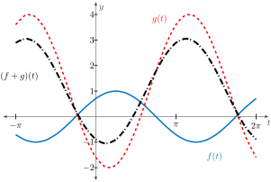
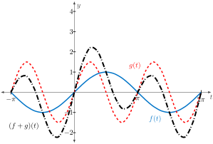
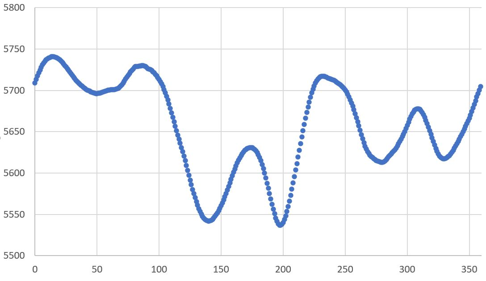
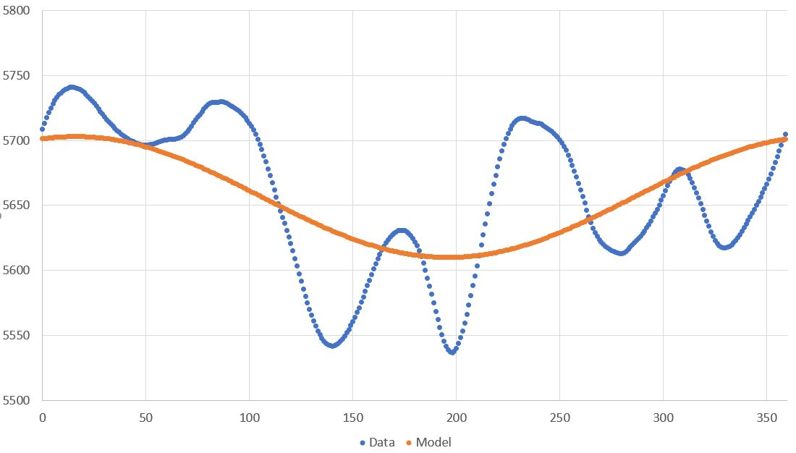
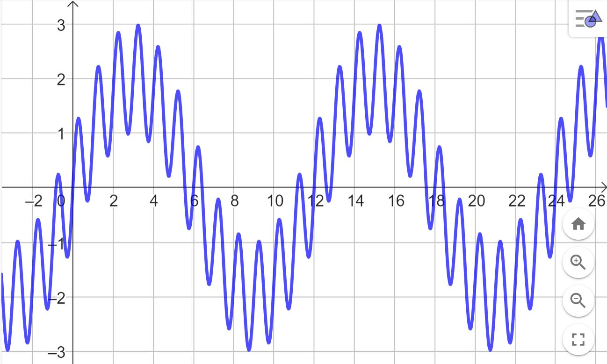
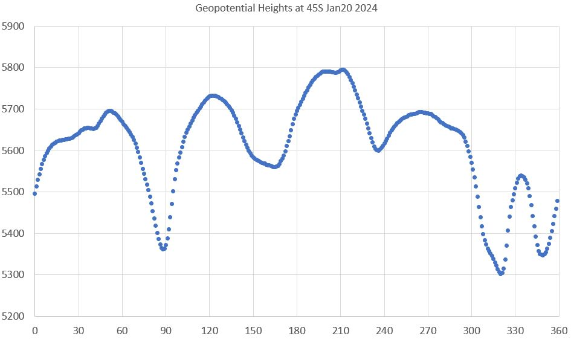
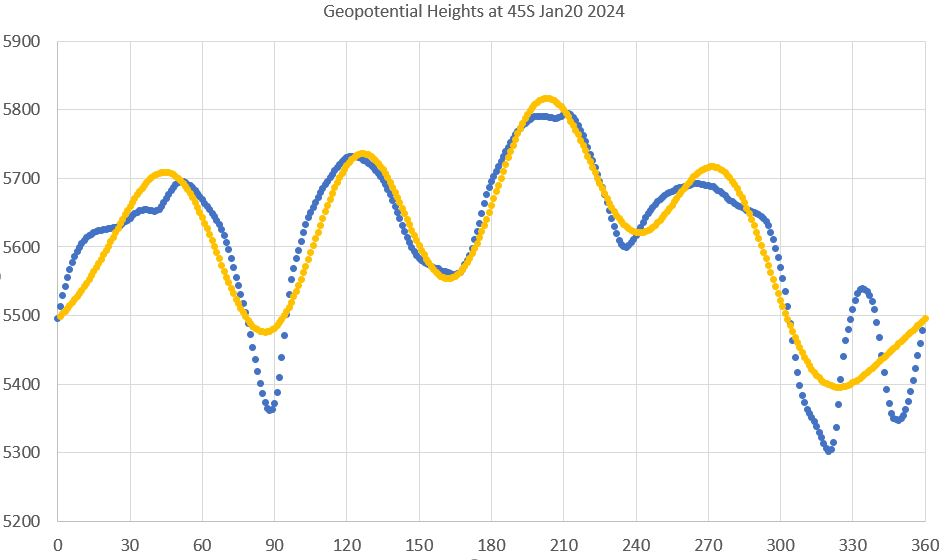
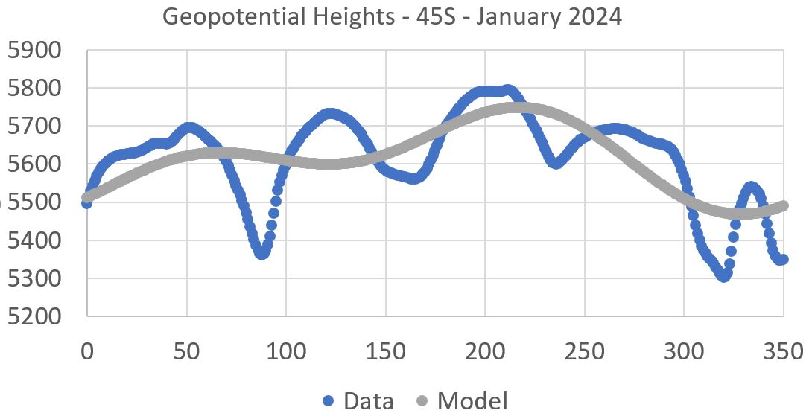
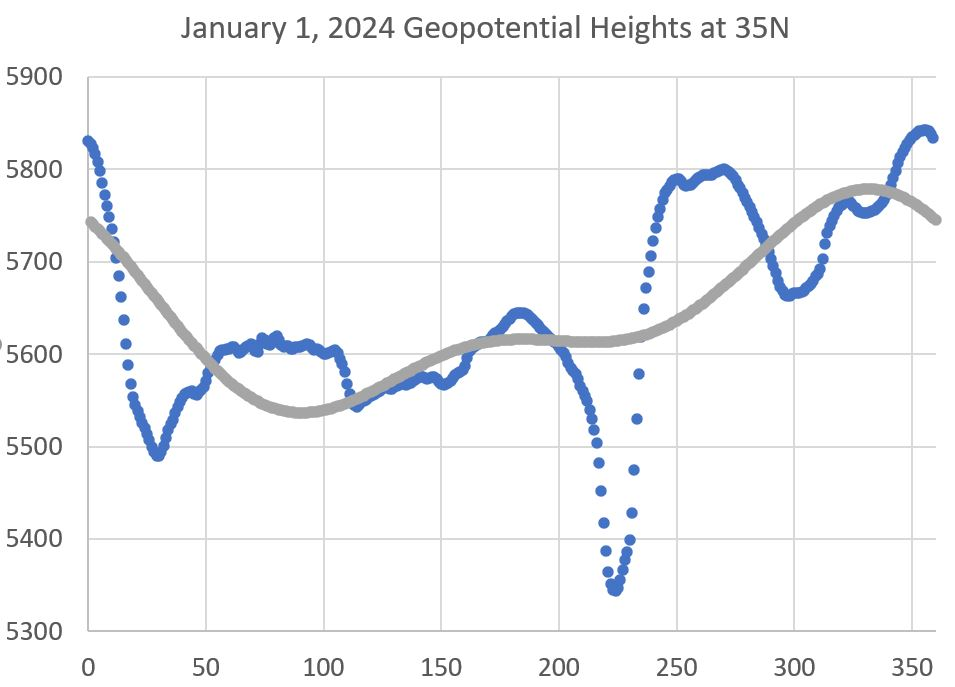

Can multiple sinusoids with different frequencies be used to model arbitrary periodic functions?
How can a trigonometric polynomial be fit to periodic data?
The sum of any two sinusoids having the same frequency \(\omega\) will again be a sinusoid. This new sinusoid may have different amplitude, phase shift, and vertical shift, but will have the same frequency \(\omega\text{.}\)
Example2.2.1.Adding Two Sinusoids with the Same Frequency.
Suppose \(f(t) = \cos \left(t - \frac{\pi}{4}\right)\) (here, \(\omega = 1\)) and \(g(t) = 3 \sin \left( t - \frac{2\pi}{3} \right)+1\) (so that \(\omega = 1\) as well). Then \((f+g)(t)\) is also a sinusoid with \(\omega=1\text{.}\)

Figure2.2.2.The sum of the sinusoid \(f(t)\) (in blue) and the sinusoid \(g(t)\) (in red) having a common frequency \(\omega\) yield another sinusoid \((f+g)(t)\) (in black) having frequency \(\omega\text{.}\)
However, the sum of two (or more) sinusoids having different frequencies will not be a sinusoid. It will be periodic. As we will see in the next section, it turns out that the key to modeling general periodic functions will be adding several sinusoids having different frequencies.
Example2.2.3.Adding Two Sinusoids with Different Frequencies.
There is no single amplitude for the sum of \(f(x)=\sin(x)\) and \(g(x)=1.5\sin(2x)\text{.}\) So \((f+g)(x)\) is periodic, but not a sinusoid.

Figure2.2.4.The sum of the sinusoid \(f(t)\) (in blue) and the sinusoid \(g(t)\) (in red) having different frequencies \(\omega_1\) and \(\omega_2\) do not produce a sinusoid. The sum \((f+g)(t)\) (in black) has no single amplitude.
Subsection2.2.1Trigonometric Polynomials
Joseph Fourier showed that an arbitrary periodic function can be represented by an infinite series of sinusoids of harmonically related frequencies. For a function \(f(t)\) with period \(T\text{,}\) a continuous Fourier series can be written
where \(\omega=\frac{2\pi}{T}\) is called the fundamental frequency and its constant multiples \(2\omega\text{,}\)\(3\omega\text{,}\)\(4\omega\text{,}\)\(\ldots\) are called harmonics. We often say that (2.7) expresses \(f(t)\) as a linear combination of basis functions: 1, \(\cos(\omega t)\text{,}\)\(\sin(\omega t)\text{,}\)\(\cos(2\omega t)\text{,}\)\(\sin(2\omega t)\text{,}\)\(\cos(3\omega t)\text{,}\)\(\ldots\text{.}\)
A finite sum of these sinusoids is called a trigonometric polynomial. In general, a trigonometric polynomial has the form
for some positive integer \(m\text{.}\) Fitting a trigonometric polynomial that consists of several harmonics to periodic data to can prove valuable in practice. The method of doing this given below is found much like the same process used earlier to minimize (2.3) to determine (2.6)
Fitting a Trigonometric Polynomial to Data.
Coefficients \(a_j\) and \(b_j\)\((j=0, 1, 2, \ldots, m)\) for which the trigonometric polynomial
Example2.2.5.Fitting a Sinusoid to Geopotential Heights.
At \(45^{\circ}N\) latitude, 500 mb geopotential heights \(Z\) as a function of degrees longitude \(t\) (see Figure 2.2.6) are periodic with period \(T=360\text{.}\) Our objective is to model \(Z\) using a trigonometric polynomial (2.8) with \(m=1\) (i.e. a sinusoid). In this situation the fundamental frequency is \(\omega = \frac{2\pi}{360}\text{.}\)

Figure2.2.6.500 mb geopotential heights \(Z\) at \(45^{\circ}N\) as a function of degrees longitude \(t\text{.}\) Data from November 10, 2023.
When \(m=1\text{,}\) we look for the best periodic function
Plotting this function against our data illustrates the best fit we can make to this data without using additional harmonics \(2\omega\text{,}\)\(3\omega\text{,}\)\(4\omega\text{,}\)\(\ldots\text{.}\)

Figure2.2.7.500 mb geopotential heights \(Z\) at \(45^{\circ}N\) as a function of degrees longitude \(t\) and \(f(t) = 5656.45 + 44.73\cos\left( \frac{2\pi}{360} t\right) + 12.79\sin\left(\frac{2\pi}{360} t\right).\)
Example2.2.8.Fitting a Trigonometric Polynomial to Geopotential Heights.
If we also use the second harmonic (i.e. take \(m=2\)) on the geopotential height data from Example 2.2.5, we then find the best periodic function of the form
Example2.2.10.Fitting Several Harmonics to Geopotential Heights.
Using several more harmonics (\(\omega = 3, 4, 5\)) produces a fairly decent approximation to the geopotential height data from Example 2.2.5 and Example 2.2.8.
Figure2.2.11.500 mb geopotential heights \(Z\) at \(45^{\circ}N\) and a model using several harmonics.
Exercises2.2.2Exercises
1.Fitting Periodic Data using a Trigonometric Polynomial.
2.Fitting Geopotential Height Data using a Trigonometric Polynomial.
3.A Trigonometric Polynomial for \(m=1\).
Explain why a trigonometric polynomial (2.8) for which \(m=1\) is a sinusoid.
Answer.
When \(m=1\text{,}\) a trigonometric polynomial has the form \(f(t)=a_0 + a_1\cos(\omega t) + b_1\sin(\omega t)\text{.}\) The first term of \(f(t)\) is just a vertical shift by \(a_0\) units. The last two terms have the same frequency and so they add to another sinusoid. It is only sinusoids with different frequencies that do not sum to another sinusoid (see Example 2.2.1 and Example 2.2.3).
4.Two sinusoids without phase shifts.
Figure 2.2.12 shows a sum of two sinusoids without phase shifts: \(A\sin(\omega_1 t) + B\sin(\omega_2 t)\text{.}\)

Figure2.2.12.The sum of two mystery sinusoids without phase shifts.
We could write this function as an infinite trigonometric polynomial (called a Fourier series)
but only two coefficients would be nonzero. Doing so would identify the two fundamental frequencies, \(\omega_1\) and \(\omega_2\text{,}\) present in the `signal’. Identify the two frequencies \(\omega_1\) and \(\omega_2\) by inspection of the graph. Hint: What two periods \(T_1\) and \(T_2\) do you see?
Answer.
\(\omega_1 = \frac{1}{6}\pi\) and \(\omega_2 = 2\pi\text{.}\) This is because \(T_1 = 12\) so that \(\omega_1 = \frac{2\pi}{12} = \pi/6\) and \(T_2 = 1\) so that \(\omega_2 = \frac{2\pi}{1} = 2\pi\text{.}\) If we take \(\omega = \omega_1= \frac{1}{6}\pi\) note that this means that all \(a_k\) and \(b_k\) are zero except \(b_1\) and \(b_{12}\text{.}\)
5.Geopotential Heights at \(45^{\circ}S\) on January 20, 2024.
representing 500 mb geopotential heights at \(45^{\circ}S\) on January 20, 2024 can be found in the spreadsheet GeopotentialHeights45SJan2024.csv. Figure 2.2.13 illustrates a plot of this periodic data. Here the horizontal axis represents degrees longitude east of the prime meridian and the vertical axis represents the 500 mb height \(Z\text{.}\)

Figure2.2.13.500 mb geopotential heights \(Z\) at \(45^{\circ}S\) on January 20, 2024.
The geopotential height \(Z\) at \(45^{\circ}S\) can be crudely modeled using a single sinusoid of the form
for some constants \(a_0\text{,}\)\(a_1\text{,}\)\(b_1\text{,}\) and \(\omega\) where \(\theta\) is a variable representing degrees east of the prime meridian.
Determine the period \(T\) (with units) and the value of constant \(\omega\) (the frequency).
Use the data in the spreadsheet to determine the values \(a_0, a_1,\) and \(b_1\) so that
Use the spreadsheet to visually verify the reasonableness of your model above. That is, plot both the data and the calculated trigonometric polynomial \(Z_2(\theta)\text{.}\)
Values of \(a_k\) and \(b_k\) (\(k=3, 4, 5\)) for the trigonometric polynomial
are given in Table 2.2.14. Use this to plot the trigonometric polynomial \(Z_5(\theta)\) with these 5 harmonics against the original data. Your plot should resemble that in Figure 2.2.15.
Table2.2.14.Coefficients \(a_k\) and \(b_k\) (\(k=3, 4, 5\)) for the trigonometric polynomial \(Z_5(\theta)\) fitting data in Exercise 2.2.2.5.
\(k\)
\(a_k\)
\(b_k\)
3
4.2532
48.8307
4
-17.4248
63.7954
5
1.4267
-65.9249

Figure2.2.15.500 mb geopotential heights \(Z\) at \(45^{\circ}S\) on January 20, 2024 and a trigonometric polynomial \(Z_5(\theta)\) using 5 harmonics.
Answer.
\(T=360^{\circ}\) and \(\omega = \frac{2\pi}{360^{\circ}}\)
\(a_0=5610.154\text{,}\)\(a_1=-91.345\text{,}\) and \(b_1=-1.109\)
\(a_2=-8.279\) and \(b_2=69.432\)
The trigonometric polynomial \(Z_2(\theta)\) and the geopotential heights \(Z\) at \(45^{\circ}S\) on January 20, 2024 are shown in Figure 2.2.16.

Geopotential heights at 45 degrees south on January 20, 2024 together with a trigonometric polynomial \(Z_2(\theta)\) of degree 2 that approximates them.
Figure2.2.16.A trigonometric polynomial \(Z_2(\theta)\) of degree 2 (having 5 terms) approximates the 500 mb geopotential heights \(Z\) at \(35^{\circ}N\) on January 1, 2024.
6.Geopotential Heights at 35\(^{\circ}N\) on January 1, 2024.
The geopotential heights \(Z(\theta)\) (in meters above sea level) at 500 mb on a line of latitude at \(35^{\circ}N\) on January 1, 2024 are plotted in Figure 2.2.17. This data was downloaded from this link at NOAA 28
. Note that this data is periodic and only one period has been plotted in Figure 2.2.17. A spreadsheet containing this data (heights vs. longitude) appears below.
for constants \(a_0, a_1\text{,}\) and \(b_1\text{.}\) The value of \(a_0\) was already found in (a). Use the spreadsheet to determine the values of \(a_1\) and \(b_1\text{.}\)
Use the spreadsheet to determine coefficients \(a_0, a_1, a_2, b_1\text{,}\) and \(b_2\) in the trigonometric polynomial approximation
Plot \(Z(\theta)\) (the graph in Figure 2.2.17) superimposed with the plot of the trigonometric polynomial \(Z_2(\theta)\) having 5 terms found in (c).
Answer.
\(\displaystyle a_0 = 5642.77\)
\(\displaystyle a_1 = 63.44, b_1 = -69.52\)
\(\displaystyle a_2 =-4.04, b_2 = -46.36\)
The graph of the trigonometric polynomial \(Z_2(\theta)\) superimposed on \(Z(\theta)\) is shown in Figure 2.2.18.

Figure2.2.18.A trigonometric polynomial \(Z_2(\theta)\) of degree 2 (having 5 terms) approximates the 500 mb geopotential heights \(Z\) at \(35^{\circ}N\) on January 1, 2024.